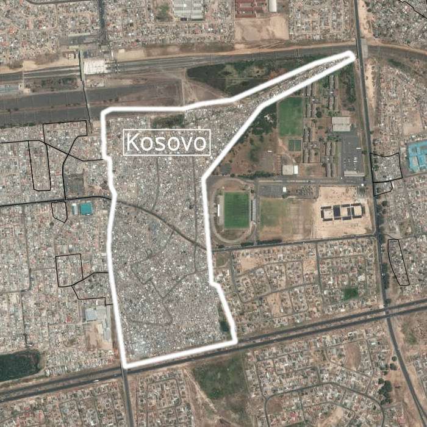
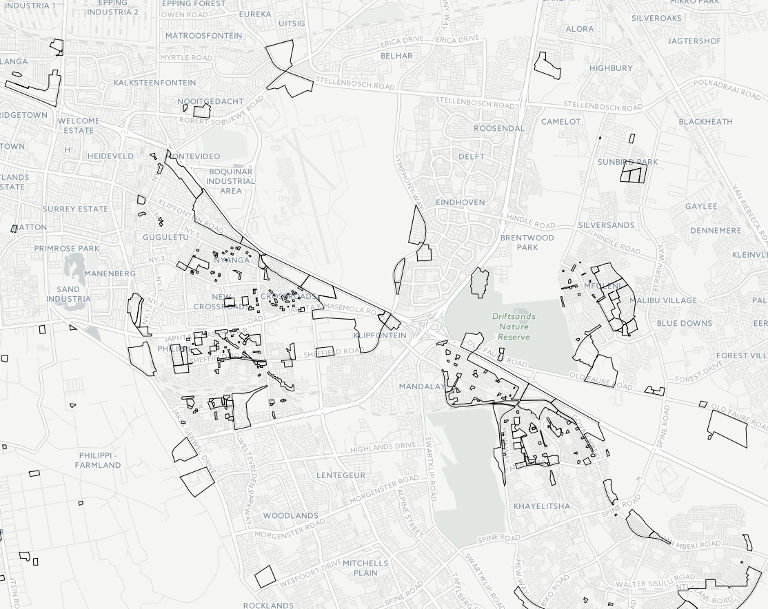
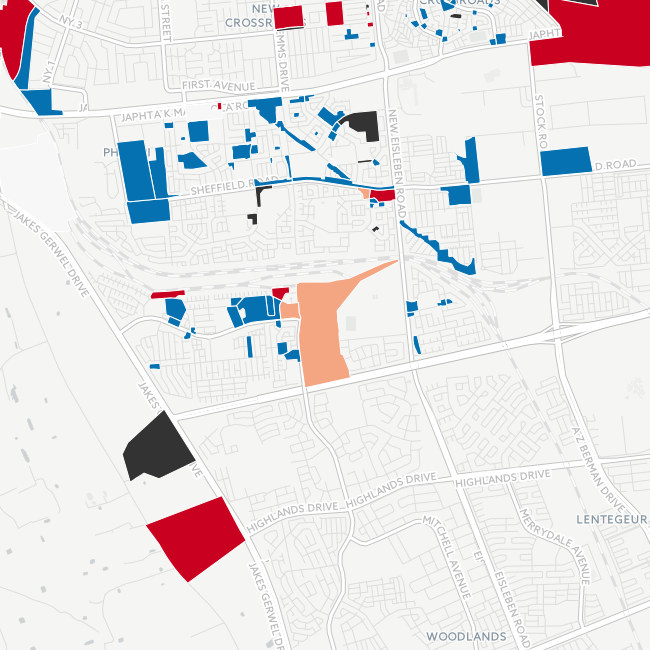
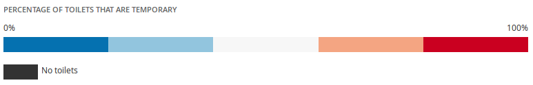
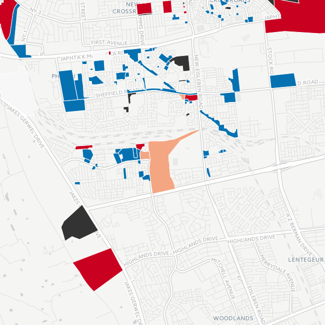
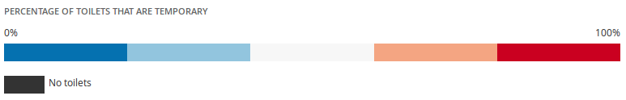
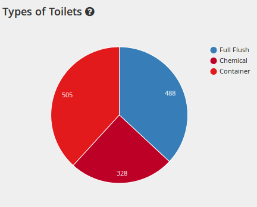
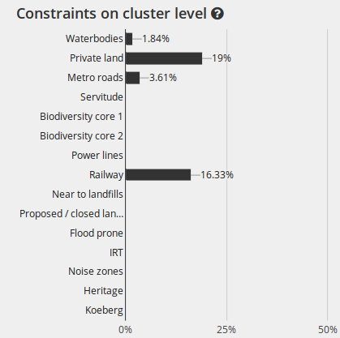

Asithandile lives in Kosovo Informal Settlement. He is wheelchair-bound after being shot by thugs in the Eastern Cape. This makes it difficult for him to navigate the poorly-maintained streets in Kosovo.
He needs help to get to the toilet and to get on and off his wheelchair once he's there. So he must ask his brother to help, which he says makes him feel "useless and uncomfortable".

He feels vulnerable when he is alone at home, as there is no one to help him use the toilet and to assist him if he has a problem in his shack.
There are no toilets for the disabled in Kosovo and Asithandile's plea to the City is to provide for them in the budget so that he - and others like him - can feel equal to able bodied people.

When you open the map all you'll see are the borders of the informal settlements within the City of Cape Town. An informal settlement pocket is a cluster or grouping of tin shack housing which can vary in size from a few shacks to a few thousand. Pockets are grouped by the City of Cape Town to make up Informal Settlements.
The six boxes at the top of the map allow you to turn various data layers on the map on and off. You can toggle between the boxes to explore further after completing this tutorial.
 



Clicking the "Temporary Toilets" button switches from the "Boundary View" to show the percentage of toilets that are temporary, which are graded by colour. Of all the toilet types that the City of Cape Town has installed in informal settlements only the full flush ones are considered to be permanent. The colour grading indicates the percentage of the toilet types that are permanent or full flush.
We can see that Kosovo has a fairly high level of temporary sanitation. Between 60 to 80% of the toilets provided by the City are not permanent full flush toilets but instead fall into the category of temporary solutions - i.e. portable, container, chemical, or bucket types.
Clicking on the pocket gives a breakdown of the basic information about Kosovo. There are 6,086 informal dwellings in the area, with a toilet to households ratio of 1:5 (one toilet per five dwellings). This doesn't sound too bad, but look at the the pie chart and you'll see that only 37% of these are full flush.
The bar chart lists the categories that the City uses to describe limitations to upgrading different informal settlements. In Kosovo, for example, we can see that 16% of the area is too close to a railway line. There is a link at the bottom of the page below the map to the detailed descriptions of these constraints which you can access after this tutorial. It is interesting in light of this information to note that despite these constraints, 488 (permanent) full flush toilets have already been installed in the area.
Now that you understand how the map works feel free to stat exploring. Alternatively, you can read zukiswa's story to learn about the challenges she faces in RR section.
Zukiswa's story Explore map